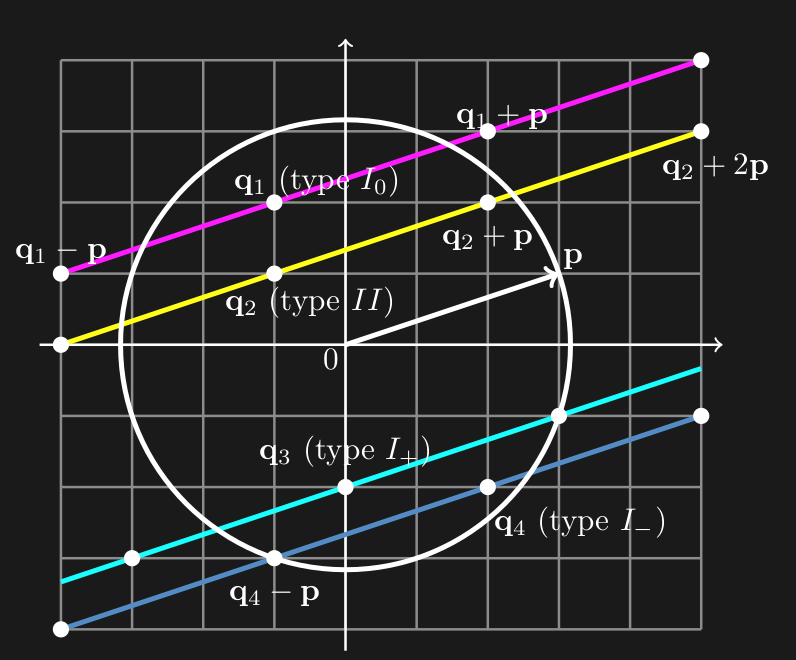

The Euler equation below is an equation describing the behavior of incompresible fluid
In the equation \(\bold{x}\) stands for the position of a particle at time \(t\), \(\bold{u}\) is the velocity of the particle located at \(\bold{x}\) at time \(t\), and \(p\) is the pressure. This formula can be derived from Newton's Second Law (\(F=ma\)). There are many generalizations of the Euler equations. The two we are concerned with are the α-Euler model, and the Navier-Stokes equation (the specifics of which we will not go into).
This project describes the stability of fluid flowing parallel to the vector \(\bold{p}\) on a torus where larger vectors \(\bold{p}\) correspond to faster flowing fluid. In this case stability means under slight perturbations the fluid flow will not become turbulent.
Through rather complicated math, which is best described in the paper below[1] we arrive at equations containing the "spectral parameter" \(\lambda\) which allow us to determine the stability of the case. If the solution \(\lambda\) has a positive real part, then the fluid flow is unstable.
The equation is parametrized by the vectors \(\bold{p}, \bold{q}\) with integer components, we define serveral cases below.
Consider a circle with radius magnitude \(\bold{p}\) and select vector \(\bold{q}\) with integer coordinates within the circle. We say case I0 holds when, \(\bold{q}+\bold{p}\) and \(\bold{q}-\bold{p}\) are out of the circle. For case I+, \(\bold{q}+\bold{p}\) is on the boundary and \(\bold{q}-\bold{p}\) is out of the circle. For case I-, \(\bold{q}-\bold{p}\) is on the boundary and \(\bold{q}+\bold{p}\) is out of the circle. For case II, either \(\bold{q}+\bold{p}\) or \(\bold{q}-\bold{p}\) must be in the circle.
The equations below contain many terms yet to be defined, however they will be shown now to highlight the similarity of the structures.
For case I0 the equations for the spectral parameter \(\lambda\) in the Euler, respectively, Navier-Stokes case are
For case I+ the equations for the spectral parameter \(\lambda\) in the Euler, respectively, Navier-Stokes case are
For case I- the equations for the spectral parameter \(\lambda\) in the Euler, respectively, Navier-Stokes case are
For case II the equation is the same as Case I0, however the equations may have complex roots. This is discussed further in the Case II section of the website. this project.
The Navier-Stokes case introduces \(\nu\) which represents viscosity
The goal is to determine the zeroes of the equations for each case. In both cases we are dealing with continued fractions. The handy recursive formula for continued fractions allows us to convert the fractions into rational functions. Let \(p_{n}/q_{n}\) be the nth convergent, and \(a_{n}\) be the nth coefficient. Then we have
Note that for our case the coefficients \(a_{n}\) are first degree polynomials. Given that all coefficients are positive at a certain \(\lambda\), this gives us the following error bounds (where \(f\) is the value the continued fraction converges to)
These rational functions are then computed, along with their corresponding error bounds and plugged into desmos.